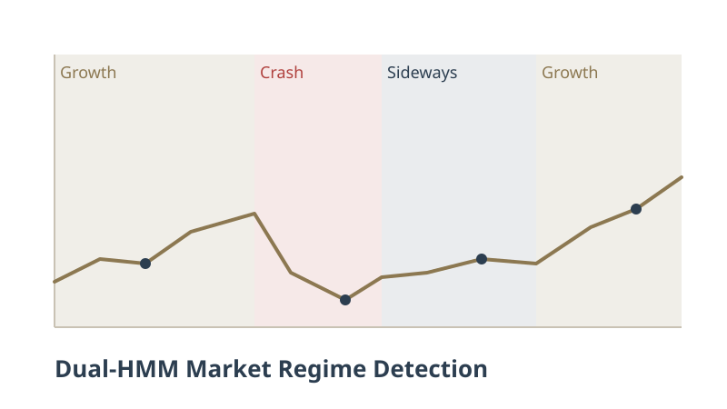

Adaptive Portfolio Guided by a Dual Hidden Markov Model — Bachelor Thesis (TFG)
Design, implementation and validation of a defensive, adaptive asset-allocation system built on two interpretable Hidden Markov Models: one tracking market volatility (calm vs. stress) and one tracking the macro cycle (expansion vs. contraction). Their intersection defines four regimes (Growth, Crash and two Sideways states), each mapped to its own basket of ETFs. Every month the portfolio is a causal soft blend of the four baskets, weighted by strictly filtered regime probabilities. Evaluated on a 7-ETF universe (SPY, QQQ, XLP, TLT, SHY, GLD, DBC) with a walk-forward backtest from April 2013 to July 2026, net of transaction costs.

How It Works
- Dual HMM (4 features only): a Volatility HMM on log(VIX) and 21-day realized SPY volatility, and a Macro HMM on z-scores of the yield-curve slope and the credit spread (FRED). Two 2-state models instead of one 4-state model: 3–4× more data per estimated parameter and unambiguous state identification
- Regime → universe mapping: Growth (SPY, QQQ), Crash (TLT, SHY, GLD, XLP), Sideways_A (SPY, GLD, DBC), Sideways_B (XLP, GLD, SHY). Within each basket, capital is split by a single inverse-volatility rule — no optimizer, no tunable parameters
- Causal soft blending: on the first trading day of each month the portfolio combines the four regime baskets weighted by filtered probabilities P(st | x1:t) from the forward recursion — never Viterbi or smoothed probabilities, which would silently leak future information. Exposure shifts gradually as evidence accumulates, which removed the need for an anti-whipsaw filter
- Reproducibility by design: a deterministic label-switching rule (states sorted by log-VIX / credit-spread z-score) and an ensemble of 10 EM initializations per window, which shrinks the seed-dependence of the Sharpe ratio from a 0.21 range to 0.04
Rigorous, Causal Validation
- Walk-forward: expanding window (minimum 5 years), models and scaler re-estimated every 21 trading days (~200 retrains), each block labelled by a model that has never seen it. Out-of-sample: April 2013 – July 2026, net of 10 bps per unit of turnover
- Regimes mean something: the Crash regime covers 88% of the COVID crash, 82% of the 2022 bear market and 70% of late 2018; SPY volatility is 29% on Crash days vs. 11% in Growth. Transition matrices are strongly diagonal (0.95–0.99 daily persistence), so regimes last months, not days
- Full ablation chain: signals (every extra feature — SPY–TLT correlation, VIX term structure — made results worse; removing macro z-scores doubled max drawdown), assets (no single ETF is indispensable), training window (expanding beats rolling 750–1,250 days), allocation engine (soft blend beats hard switching under all three weighting rules) and rebalancing day
- Monte Carlo: 5,000 block-bootstrap histories — P(Sharpe > 0) = 100%, 90% CI 0.76–1.67, beats 60/40 in 94% and SPY in 92% of them. Deflated Sharpe ratio (Bailey & López de Prado) over all 56 configurations tested: the chance threshold is 0.23 and even the worst variant (0.72) clears it
Results (April 2013 – July 2026, out-of-sample, net of costs)
- Sharpe 1.20 vs. 0.85 for the 60/40 SPY/TLT benchmark and 0.88 for SPY buy & hold (excess-return Sharpe: 0.99 vs. 0.68 and 0.77 — the edge is not an artefact of high interest rates)
- Max drawdown −11.9% vs. −27.7% for 60/40 and −33.7% for SPY, with half of SPY's volatility (8.5% vs. 16.9%); CAGR 10.4% vs. 8.9% for 60/40 — better on every metric at once
- Worst year −7% (2022, when 60/40 lost 23%), while keeping most good years (+23% in 2017, +25% in 2021, +21% in 2023 and 2024) and never going to cash
- Same 7 ETFs with static inverse-volatility and no regime information: excess Sharpe 0.50 — half of the system's. The advantage survives up to ~70 bps of costs, 7× the base assumption
- Honest weak spot: a macro false alarm in 2025–2026 kept the portfolio ultra-defensive while equities rallied (+0.4% vs. +17.7% for SPY in 2025) — the structural price of a defensive strategy, included in every figure above
Technologies Used
Python
hmmlearn (HMM)
pandas / NumPy
scikit-learn
SciPy
yfinance
FRED
Parquet (pyarrow)
matplotlib
LaTeX